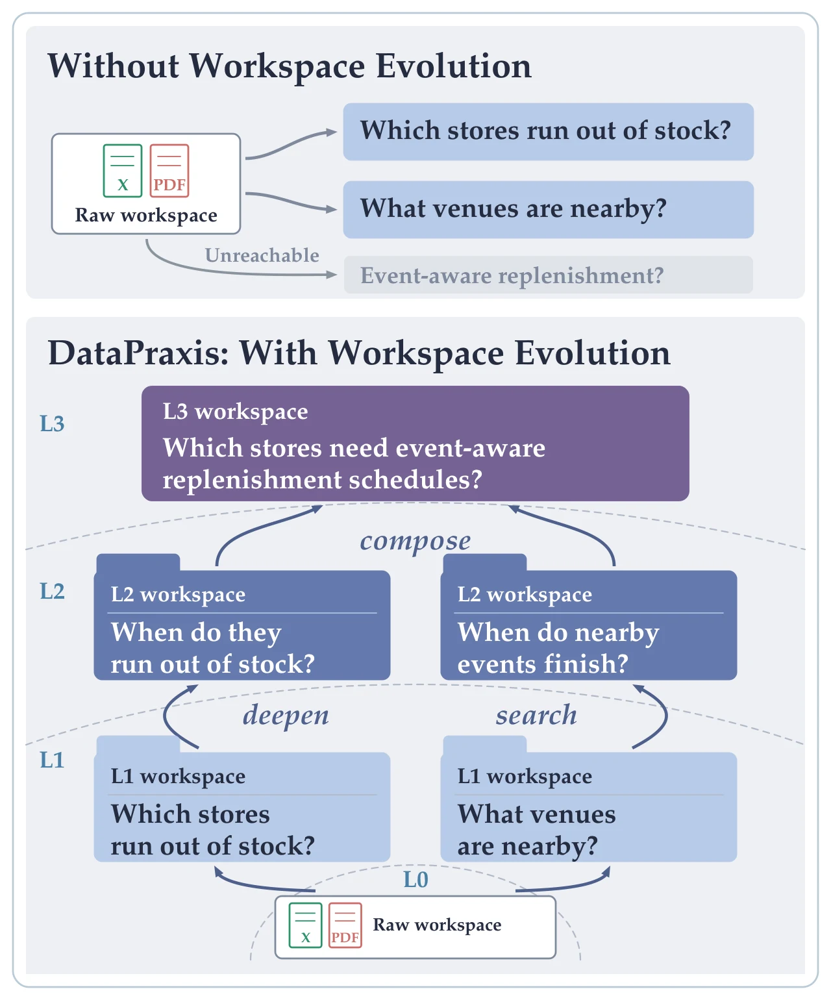
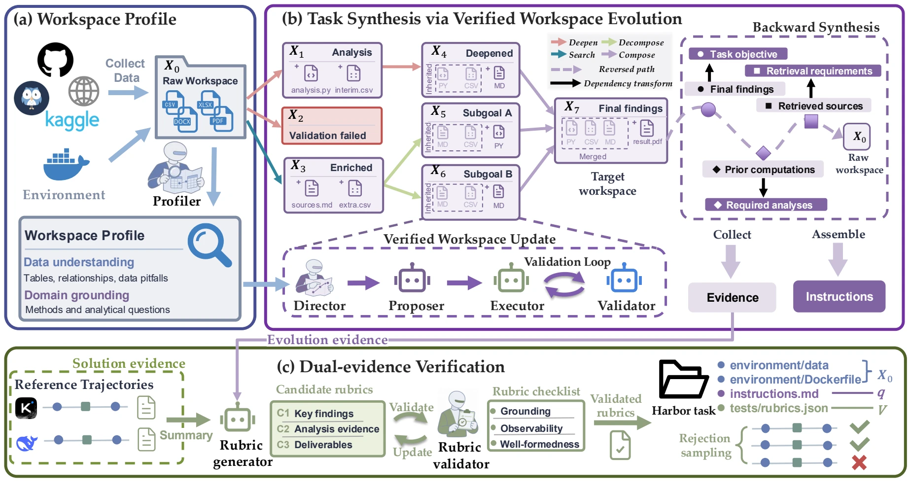
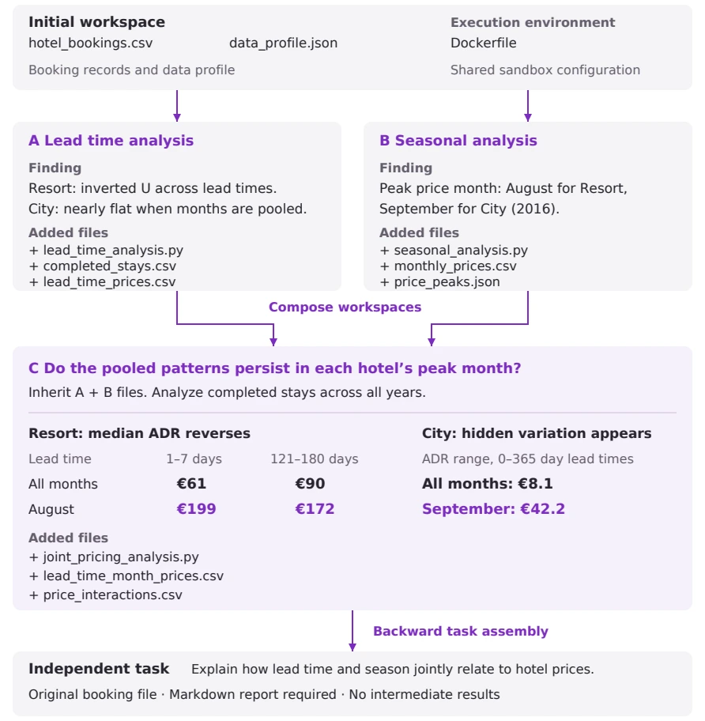
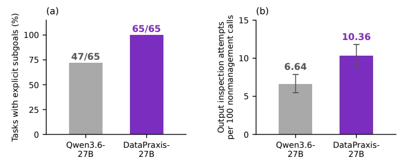

Profile the workspace
Characterize the data, relationships, domain, and execution environment to identify meaningful directions for analysis.
Scaling Analytics Tasks via
Verified Workspace Evolution
The next question is hidden in the last finding.
Let the workspace evolve.
01 / THE IDEA
Tasks generated directly from raw data can miss questions that only emerge through actual analysis. DataPraxis preserves verified findings in executable workspaces, then uses them to discover deeper tasks.
Each step carries forward scripts, intermediate tables, and supported conclusions. Later analyses can build on this work or combine independent branches.
Backward synthesis turns the accumulated dependencies into a standalone task. Intermediate scripts and discovered conclusions are withheld, so the solver must reconstruct the analysis.
See a concrete example
02 / THE FRAMEWORK
A task construction process grounded in both the evolving workspace and independent solutions.

Characterize the data, relationships, domain, and execution environment to identify meaningful directions for analysis.
Discover questions, execute analyses, and validate results. Inherit or combine workspaces, then trace dependencies backward to assemble tasks.
Combine verified evolution findings with independent solution trajectories to construct and validate rubrics for the final deliverables.
03 / EXPERIMENTS
Training on DataPraxis-5K improves both evaluated backbones on DABStep, JobBench, and RideBench.
Scores reported in the paper. DABStep uses overall pass rate (%). JobBench and RideBench use their respective benchmark scores. Each bar has a 0–100 scale.
| Model / training data | DABStep Easy | DABStep Hard | DABStep Overall | JobBench | RideBench |
|---|---|---|---|---|---|
| Claude Opus 5 | 87.50† | 48.68† | 54.89 | 69.50 | 82.02 |
| Kimi-K3 | 84.72 | 69.58 | 72.00 | 57.20 | 79.78 |
| GLM-5.2 | 87.50 | 49.47 | 55.55 | 51.20 | 78.65 |
| DeepSeek-V4-Pro | 84.72 | 44.71 | 51.11 | 49.20 | 75.28 |
| GPT-5.6-Terra | 83.33 | 45.50 | 51.55 | 33.80 | 68.54 |
| Gemini-3.7-Flash | 90.28 | 53.70 | 59.55 | 57.90 | 77.53 |
| Gemini-3.6-Flash | 91.67 | 41.01 | 49.12 | 43.70 | 79.78 |
| Qwen3.6-27B | |||||
| Base | 84.72 | 26.46 | 35.78 | 38.50 | 70.79 |
| DataMind-5K | 86.11 | 38.36 | 46.19 | 37.90 | 69.66 |
| DataPraxis-5K | 83.33 | 49.74 | 55.11 | 51.90 | 74.16 |
| Qwen3.6-35B-A3B | |||||
| Base | 81.94 | 27.78 | 36.45 | 31.30 | 59.55 |
| DataMind-5K | 84.72 | 29.63 | 38.44 | 26.60 | 59.55 |
| DataPraxis-5K | 81.94 | 47.09 | 52.67 | 41.00 | 71.91 |
At a fixed 5K training examples, removing dual-evidence verification reduces DABStep from 55.11 to 50.00 and JobBench from 51.90 to 47.50 for the 27B student.
From depth 1 to 4, the task pass rate falls from 35.6% to 22.9%, while the mean number of tool-call turns grows from 17.8 to 30.1.
Evaluation uses Claude Code as the agent harness and Harbor sandboxes. RideBench is an internal benchmark using simulated records. See the paper for the full setup and ablations.
04 / A CLOSER LOOK
Cases from the paper show how accumulated evidence changes both the question and the way a deliverable is evaluated.
One branch analyzes booking lead time. Another identifies seasonal price peaks. Their composition asks whether the pooled relationship still holds within peak months.

Median room rate for bookings made 1–7 versus 121–180 days before arrival.
The corresponding comparison reverses when conditioning on August.
Reconstruct how booking lead time and season jointly relate to room rates, starting from the original records.
A coffee retail task asks for product associations and bundle recommendations. Validation reveals that a proposed conclusion depends on which shopping baskets are counted.
Distinguish frequency from association, and require Bakery + Tea to have lift above one.
Bakery + Tea has lift 0.920 among all 116,790 baskets, but 1.197 among 28,904 baskets with multiple categories.
Retain the distinction between frequency and lift. Require a supported positive association without fixing that pair to Bakery + Tea.
Verification preserves a substantive analytical requirement while removing a conclusion that is too specific to one population.
Across the same 65 JobBench tasks, the paper examines explicit task organization and tool calls that inspect generated documents, spreadsheets, or data files.

In a workforce planning example, inspecting workbook rows exposes an incomplete tracker. The trained model repairs the row indexing, regenerates the file, and confirms all four applicant IDs.
05 / OPEN DATA
5,000 verified trajectories spanning diverse domains and output formats, constructed through verified workspace evolution.
Get the dataset on Hugging FaceOne training split. Five compressed JSONL shards. Conversations and tool definitions preserved in each record.
DataPraxis needs seed workspaces with enough complexity and analytical scope to support continued exploration. The difficulty of synthesized tasks and the quality of trajectories depend on the capabilities of the teacher models. See Appendix D of the paper.
REFERENCE
@misc{jia2026datapraxis,
title={DataPraxis: Scaling Analytics Tasks via Verified Workspace Evolution},
author={Nan Jia and Wenxuan Shi and Jingqing Ruan and Zhizhao Zeng and
Tianyi Zhai and Zhongda Su and Feng Hong and Zhengyu Chen and
Wenhao Yan and Haojin Yang and Siqi Dai and Weipeng Zhang and
Ke Zeng and Xunliang Cai},
year={2026},
note={Preprint},
url={https://obitojn.github.io/DataPraxis/}
}